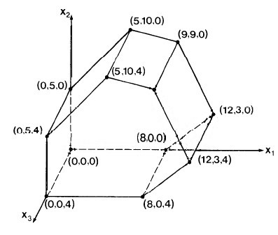

Outline
- Introduction to Linear Programming
- Formulating Problems as Linear Programs
- Foundations in Gaussian Elimination
- The Simplex Method
Objectives
- Be aware of the range of problems to which linear programming can be applied.
- Understand the Simplex algorithm just enough to understand the format of linear equations used and what is done with them.
- Be able to write a simple linear program for a problem.
Readings
If you have a background in Gaussian Elimination and read and understand Sections 29.0-29.3 of CLRS, up through the description of Simplex (you need not read the proofs that follow), these objectives will be met. (The material of CLRS Sections 29.4-29.5 is excellent, but we don’t need to see all the proofs concerning Simplex to use it.)
If you don’t have a background in Gaussian Elimination, then reading and understanding Section 28.1 of CLRS would provide it. However, Section 28.1 provides more detail than is needed to get the gist of Gaussian Elimination and the Simplex. I found Sedgewick’s (1984), Chapter 5 presentation of Gaussian Elimination to be clear and sufficient. I also found his presentation of Linear Programming in Chapter 38 useful for its clear narrative around an example.
For a full study of linear programming I recommend this reading sequence:
- Chapter 5 of Sedgewick (1984) on Gaussian Elimination
- Chapter 38 of Sedgewick (1984) on Linear Programming
- Sections 29.0 through the first half of 29.3 of CLRS
If you don’t have time for the full reading:
- Read the following web notes (which summarize the main points from Sedgewick and some material from CLRS 29.0-29.3).
- Then read 29.0, 29.1 and 29.2 of CLRS before class (quiz questions and class problems are drawn from those sections).
Introduction to Linear Programming
The following brief conceptual overview of Linear Programming and its roots in Gaussian Elimination is based largely on Chapters 5 and 38 of: Robert Sedgewick (1983). Algorithms. Reading, MA: Addison-Wesley. First Edition (available on Internet), with some comments from CLRS Chapter 29.
Mathematical programming is the process of modeling a problem as a set of mathematical equations. (The “programming” is in mathematics, not computer code.)
Linear programming is mathematical programming where the equations are linear equations in a set of variables that model a problem, and include:
- a set of constraints on the values of the variables (each constraint being expressed as a linear equation), and
- an objective function or linear function of these variables that is to be maximized subject to these constraints.
A large and diverse set of problems can be expressed as linear programs and solved. Examples include:
- Scheduling tasks, such as in business, construction or manufacturing, for example, scheduling flight crews for an airline.
- Flows in a network, including flows of multiple types of substances or commodities subject to various constraints (example to be given).
- **Maximizing an outcome ** given a set of constrained resources, such as deciding where to drill for oil for maximum expected payoff.
Simplex Algorithm
- A well established algorithm (actually, family of algorithms) for solving linear programming problems.
- Available in many computer packages.
- Not always the most efficient way to solve a problem (many of the algorithms we have studied are more efficient for their specialized problem), but is often the easiest feasible approach.
- Well studied, but analyzing its asymptotic complexity is still an active area of research, over 50 years after its invention!
- Examples have been given requiring exponential time, but Simplex has been repeatedly shown to have good performance in practice on real problems.
Examples
We begin with examples of problems for which we already have more efficient algorithms. The point of revisiting them here with less efficient linear programming solutions is to show you how linear programming works in terms of familiar problems; and also to reinforce the recurring theme that problems can be solved with different algorithms if you change problem representation.
Linear Program for Single-Pair Shortest Paths
The Bellman-Ford algorithm for single-source shortest paths uses the [
Relax](http://www2.hawaii.edu/~suthers/courses/ics311s14/Notes/Topic-18.html#
relax) procedure to find a distance v.d, where for every edge (u, v) ∈
E, v.d ≤ u.d + w(u, v) (since Relax changes v.d
precisely when this is not true). Also, s.d for the source vertex s is
always 0.
We can translate these observations directly into a linear program for the single-pair shortest-path problem from s to t. We will use notation d__v instead of v.d to be consistent with typical linear programming notation:
Maximize: d__t
Subject to:
d__v ≤ d__u+ w(u, v), ∀ (u, v) ∈ E
s.d = 0.
Why are we maximizing d__t when we seek shortest paths?
- If we minimized d__t, then there would be a trivial solution where d__v = 0, ∀ v ∈ V.
- The minimization that finds shortest paths is actually implicit in the first constraint.
Each d__v will be given the maximum value that is yet ≤ the smallest d__u + w(u, v).
(Compare to the fact that we needed to find longest paths when determining the shortest time in which a set of jobs could finish in the parallel scheduling problem given in class.)
The extension to single-source all-destinations is straightforward: maximize the sum of the destination distances.
The custom algorithms for single- source and indeed all- pairs shortest paths will be more efficient than solving these problems with linear programming, but this example (and the next) illustrates how linear programming works in terms of a familiar example.
Linear Program for Max Flow
Next we show how to model a max-flow problem with linear programming. Instead of writing f(s,a) to indicate the flow over edge (s,a) (for example), we follow the conventions of the linear programming literature and write f__sa. (Sedgewick uses _X_AB.) CLRS present a more general template for any flow network, whereas here we look at a specific example:
Maximize: _f_sa+ _f_sb
Subject to:
_f_sa ≤ 8 _f_sb ≤ 2
_f_ac ≤ 6 _f_da ≤ 3
_f_bd≤ 5 _f_cb ≤ 2
_f_ct ≤ 4 _f_dt ≤ 5
_f_sa + _f_da = _f_ac _f_sb + _f_cb = _f_bd
_f_dt + _f_da = _f_bd _f_cb + _f_ct = _f_ac
_f_sa, _f_sb, _f_ac, _f_cb, _f_ct, _f_bd, _f_da, _f_dt ≥ 0.
The expression to be maximized,
fsa + fsb
is the flow over the edges coming out of the source, and hence will be the flow of the entire network. If the linear program maximizes this, then we have found the max flow. (If there are edges incoming to s we can subtract these in the expression to be maximized.)
These inequalities capture edge capacities:
fsa ≤ 8; fsb ≤ 2; fac ≤ 6; fda ≤ 3; fbd ≤ 5; fcb ≤ 2; fct ≤ 4; fdt ≤ 5.
These equalities capture the conservation of flow at vertices (we write the single edge on the right hand side to give the equations uniform formats):
fsa + fda = fac (flow through a)
fsb + fcb = fbd (flow through b)
fcb + fct = fac (flow through c)
fdt + fda = fbd (flow through d)
The final eight inequalities (written in one line for brevity) express the constraint that all flows must be positive:
_f_sa, _f_sb, _f_ac, _f_cb, _f_ct, _f_bd, _f_da, _f_dt ≥ 0.
The Simplex algorithm (discussed later and in the readings), when given a suitable form of these equations (see section 29.1 CLRS), will return an assignment of values to variables fsa, … fdt that maximizes the expression fsa + fsb and hence flow.
The Edmonds-Karp flow algorithm is more efficient than the Simplex algorithm for solving this version of the max-flow problem. However, Edmonds-Karp is difficult to modify for problem variations such as multiple commodities or dealing with cost-benefit tradeoffs. These additional constraints are easy to add to a linear program.
In general, if a problem can be expressed as a linear program it may be quicker from a development standpoint to do that rather than to invent a custom algorithm for it. Linear programming covers a large variety of problems.
The point here is to introduce linear programming with a familiar example, and to illustrate its generality, but this also provides another example of “problem reduction”, a concept that will be at the core of the final topic of this course on Complexity Theory & NP-Completeness.
Gaussian Elimination
The Simplex algorithm works in a manner similar to (derived from) Gaussian Elimination for solving a set of linear equations.
Invented by Chinese mathematicians a few thousand years ago, and in Europe by Newton and revised by Gauss, Gaussian elimination is a two part method for solving a system of linear equations.
As a simple example, suppose we have the following system:
** x + 3_y_ − 4_z_ = 8
x + y − 2_z_ = 2
−x − 2_y_ + 5_z_ = −1 **
The goal is to find values of x, y, and z that satisfy these equations. (Recall that there may be zero, one, or an infinite number of solutions, and you need as many equations as variables to have a unique solution.)
If we think of the variables as subscripted as shown on the left, then we can rewrite the system of equations as a matrix equation without bothering with the letters, as shown on the right:
_x_1 + 3_x_2 − 4_x_3 = 8
_x_1 + _x_2 − 2_x_3 = 2
−_x_1 − 2_x_2 + 5_x_3 = −1
The following operations can be done on systems of linear equations such as the above. (Later, in the section on linear programing, we’ll drop the parentheses and put everything in one matrix. Then, the operations below will be operations on rows and columns of the matrix.)
- Interchanging equations: Since the order in which we write equations does not matter, we can reorder the rows.
- Renaming variables: Swapping entire columns with each other. Swapping columns i and j, what was formerly xi becomes xj and vice-versa.
- Multiplying equations by a constant: Accomplished by multiplying all numbers in a row by that constant.
- Adding two equations and replacing one by the sum: Since the two sides of an equation are equal, we can add them to the two sides of another equation without affecting equality.
The Strategy
Gaussian elimination is a systematic way of applying these operations to make the value of one variable obvious (forward elimination), and then substituting this value back into the other equations to expose their values (backward substitution).
Forward Elimination (Triangulation)
Forward elimination turns the matrix into a triangular matrix, where there is only one variable in the last equation, only that variable plus one more in the next equation up, etc.
For example, replace the second equation by the difference between the first two:
Before: 
After:
One term has gone to 0: this means x1 has been eliminated from the second equation. Let’s eliminate x1 from the third equation by replacing the third by the sum of the first and the third:

Now if we replace the third equation by the difference between the second and twice the third, we can eliminate x2 from the third row, leaving a triangular matrix. Writing the result as equations:
_x_1 + 3_x_2 − 4_x_3 = 8
2_x_2 − 2_x_3 = 6
−4_x_3 = −8
At the completion of the forward elimination phase, the equations are easy to solve.
Backward Substitution Phase
It is easy to determine from the third equation that x3 = 2. Substituting that into the second equation, we can derive x2:
2_x_2 − 4 = 6
_x_2 = 5
Substituting this and x3 = 2 into the equation above (rewritten below) solves for x1:
_x_1 + 3_x_2 − 4_x_3 = 8
_x_1 + 15 − 8 = 8
_x_1 = 1
The Algorithm
So, in general we can solve systems of linear equations as written on the left by converting them into matrices as written on the right:

It is convenient to represent this entire system in one N x (N+1) matrix.
Basic Algorithm for Gaussian Elimination
We can eliminate
- the first variable from all but the first equation by adding an appropriate multiple of the first equation to each of the second through _N_th equations (the multiple will be different for each equation);
- the second variable from all but the first two equations by adding an appropriate multiple of the second equation to the third through _N_th equations;
- and so on …
In general, the algorithm for forward elimination eliminates the i_th variable in the _j_th equation by multiplying the _i_th equation by _aji / aii and subtracting it from the j_th equation, for _i+1 ≤ j ≤ N.
We use aji / aii because (aji / aii) * aii = aji, so when we subtract row i from row j we get aji - aji = 0 in cell j,i.
The essential idea can be expressed in this pseudocode fragment (translated from Sedgewick’s Pascal):
for i = 1 to N do
for j = i + 1 to N do
for k = N + 1 downto i do
a[j,k] = a[j,k] − a[i,k] * a[j,i] / a[i,i]
There are three nested loops. Trivial Question: How do the loops grow with N? What’s the complexity?
Elimination Elaborated
This code is too simple: In an actual implementation, various issues must be dealt with, including:
- If aii = 0, cannot divide by 0. Need to swap rows to make aii non-zero in the outer loop. If this is not possible, there is no unique solution.
- If aii is very small, the scaling factor aji / aii could get very large, leading to rounding error in floating point representations used in computers. This is solved by always choosing the row in i+1 to N with the largest absolute value.
The process of elimination is also called pivoting, a concept that shows up in the application to linear programming.
Sedgewick presents an improved version as a Pascal procedure. If you want to understand the algorithm at this level of detail you should read CLRS 28.1.
Linear Programming
Linear programs are systems of linear equations, but with the additional twists that
- The constraint equations may include inequalities.
- There is also a linear expression, the objective function, to be maximized.
These two are related:
- The constraints being inequalities means there is often no unique solution to the system of constraints.
- Maximizing the objective function helps us choose from among the infinite possible solutions.
In fact, these points capture our motivations, in many cases, for using linear programming for real-world problems! There are many ways to act (i.e., many solutions), but we want to know which one is the best (i.e., maximized objective function). The constraints model a set of possible solutions, and the objective function helps us pick one that maximizes something we care about. Linear programming is a general way to approach any such situation that can be modeled with linear equations.
Example
For example, a simple linear program in two variables might look like this:

−_x_1 + _x_2 ≤ 5
_x_1 + 4_x_2 ≤ 45
2_x_1 + _x_2 ≤ 27
3_x_1 − 4_x_2 ≤ 24
_x_1, _x_2 ≥ 0
Geometric Interpretation
We can graph this example as shown:
Each inequality divides the plane into one half in which a solution cannot lie and one in which it can.
For example, x1 ≥ 0 excludes solutions to the left of the x2 axis, and −x1 + x2 ≤ 5 means solutions must lie below and to the right of the line −x1 + x2 = 5, shown between (0,5) and (5,10).
Simplex
Solutions must lie within this feasible region defined by intersecting regions (half-planes in this example). That region is called the simplex.
The simplex is a convex region: for any two points in the region, all points on a line segment between them are also in the region. Convexness can be used to show an important fact:
Fundamental Theorem
The objective function is always maximized at one of the vertices of the simplex.

Think of the objective function (here, x1 + x2, the dotted line) as a line of known slope but unknown position. Imagine the line being slid towards the simplex from infinity. If there is a solution, it will first touch the simplex at one of the vertices (one solution) or coincide with an edge (many solutions) that includes a vertex.
Where would this line touch the simplex?
The algorithm does not actually slide a line. Rather, this geometric interpretation tells us that the algorithm need only need search for a solution at the vertices of the convex simplex. The simplex method systematically searches the vertices, moving to new vertices on which the objective function is no less, and is usually greater than the value for the previous vertex.
Other Issues Exposed by the Geometric Interpretation
- Linearity is important: if either the objective function or the simplex were curved, it would be much harder to tell where they overlap optimally.
- If the intersection of the half-planes is empty, the linear program is infeasible.
- A constraint is redundant if the simplex defined by the other constraints lies entirely within its half-plane. Not a problem but the code must handle these situations.
- The simplex may be unbounded. As a result, the solution may be ill-defined, or even if it is well defined an algorithm may have difficulty with the unbounded portion.
Multiple Dimensions
The geometric interpretation extends to more variables = dimensions.
In three dimensions,
- The simplex is a convex 3-D solid defined by the intersection of half-spaces defined by planes rather than lines.
- The objective function is a plane that we can imagine being brought in to intersect with a vertex of the solid.
In n dimensions,
- (n-1)-dimensional hyperplanes are intersected to define an n-dimensional simplex.
- The objective function is an n-1 dimensional hyper-plane brought from infinity to intersect with the simplex.
The anomalous situations get much harder to detect in advance as dimensions increase, so it is important to handle them well in the code.
As an example, add the inequalities x3 ≤ 4 and x3 ≥ 0 to our previous example. The simplex becomes a 3-D solid:

−_x_1 + _x_2 ≤ 5
_x_1 + 4_x_2 ≤ 45
2_x_1 + _x_2 ≤ 27
3_x_1 − 4_x_2 ≤ 24
_x_3 ≤ 4
_x_1, _x_2, _x_3 ≥ 0
If the objective function is defined to be x1 + x2 + x3, this is a plane perpendicular to the line x1= x2 = x3. Imagine this plane being brought from infinity to the origin: where would it hit the simplex?
Again, the algorithm we discuss below does not actually move planes from infinity; this is just a way of visualizing the fact that an optimal solution must lie on some vertex of the n-dimensional simplex, so we need only search these vertices.
The Simplex Method
Now we see how pivoting from Gaussian elimination is used. Pivoting is analogous to moving between the vertices of the simplex, starting at the origin. First, we need to prepare the data …
Standard Form
(Note: Sedgewick does not distinguish between standard and slack forms; this discussion is based on CLRS section 29.1, to which the reader is referred for details.)
When equations are written to model a problem in a natural way, they may have various features that are not suitable for input to the Simplex Method. We begin by conversion into standard form:
Given n real numbers c_1, _c_2, … _c__n (coefficients on objective function),
m real numbers b_1, _b_2, … _b__m (constants on right hand side of equations),
and m__n real numbers a__i__j for i = 1, 2 … m and j = 1, 2, … n (coefficients on variables in equations),
find real numbers x_1, _x_2, … _x__n (the variables)
that maximize: Σ_j=1,_n cj xj (the objective function)
subject to: Σ_j=1,_n aij xj ≤ bj for i = 1, 2, … m (regular constraints)
and xj ≥ 0, for j = 1, 2, … n (nonnegativity constraints)
The following conversions may be needed to convert a linear program into standard form (see CLRS for details and justification):
- If the objective function is to be minimized rather than maximized, negate the objective function (i.e., negate its coefficients).
- Replace each variable x that does not have a nonnegativity constraint with x’−x’‘, and introduce the constraints x’ ≥ 0 and x’‘ ≥ 0.
- Convert equality constraints of form f(x_1, _x_2, … _x__n) = b into two inequality constraints f(x_1, _x_2, … _x__n) ≤ b and f(x_1, _x_2, … _x__n) ≥ b.
- Convert ≥ constraints (except the nonnegativity constraints) into ≤ constraints by multiplying the constraints by -1.
Our example above is already in standard form, except that some of the coefficients aij are equal to 1 and are not written out, and we have not written terms with 0 coefficents. Making all aij explicit, we would write:
−1_x_1 + 1_x_2 + 0_x_3 ≤ 5
1_x_1 + 4_x_2 + 0_x_3 ≤ 45
2_x_1 + 1_x_2 + 0_x_3 ≤ 27
3_x_1 − 4_x_2 + 0_x_3 ≤ 24
0_x_1 + 0_x_2 + 1_x_3 ≤ 4
_x_1, _x_2, _x_3 ≥ 0
Slack Form
The Simplex Method is based on methods (akin to Gaussian elimination) for solving systems of linear equations that require that we work with equalities rather than inequalities (except for the constraints that the variables are non-negative).
We can convert standard form into slack form by introducing slack variables, one for each inequality, that “take up the slack” allowed by the inequality. (These will be allowed to range as needed to do so.)
For example, instead of x_1+ 4_x_2 ≤ 45, we can write _x_1 + 4_x_2 + _y = 45, where y can range over the values needed to “take up the slack” between inequality and equality.
Applying this idea to the 3-D example above, and using a different yi for each equation, we can model that example with:
Maximize _x_1 + _x_2 + _x_3 subject to the constraints:
−1_x_1 + 1_x_2 + 0_x_3 + _y_1 = 5
1_x_1 + 4_x_2 + 0_x_3 + _y_2 = 45
2_x_1 + 1_x_2 + 0_x_3 + _y_3 = 27
3_x_1 − 4_x_2 + 0_x_3 + _y_4 = 24
0_x_1 + 0_x_2 + 1_x_3 + _y_5 = 4
_x_1, _x_2, _x_3, _y_1, _y_2, _y_3, _y_4, _y_5 ≥ 0
There are m equations in n variables, including up to m slack variables (one for each inequality). (Note: in using n and m, I am following CLRS. Sedgewick uses M for number of variables and N for number of equations.)
- We assume that n > m (more variables than equations), so there are many solutions possible. (In our example above, n = 8 and m = 5.)
- We assume that the origin ((0, 0, 0) in this example) is a point on the simplex, so we can use it as a starting point for the search for the best solution, which must lie on some vertex. (The assumption that the origin is a solution can be eliminated if needed.)
We can now write the slack-form system of equations (e.g., above) as a matrix (e.g., shown below), where the 0th row contains the negated coefficients of the objective function. Sedgewick describes how this negation directs the procedure to select the correct rows and columns for pivoting), and the (n+1)th column has the numbers on the right hand side of the equation.
We want to perform pivot operations, using the same row and column manipulations as for Gaussian elimination.
- Instead of trying to make a triangular matrix we are trying to get each column corresponding to the non-slack variables _x_1, _x_2, and _x_3 to have exactly one “1” in it and all the rest “0”s.
- This is because the variables with one “1” in it and all the rest “0”s are the basis variables: their values give the solution if we set all other variables to 0.
- Then we will be able to read off the values of the variables in the (n+1)th or rightmost column. The value of variable x__i will be found in row i column n+1, or at a__i, n+1.
- We don’t care what the values of the slack variables yi are (they just move the solution around in the feasible inequality areas).
As we proceed, the upper right cell will have the current value of the objective function. We always want to increase this. The question is what strategy to take.
The most popular strategy is greatest increment:
- Choose the column q with the smallest value in row 0 (the largest absolute value). The objective function will increase if we use any column with a negative entry in row 0.
- Choose the row p from among those with positive values in the chosen column that has the smallest value when divided into the (n+1)th element in the same row. (Sedgewick discusses how this guarantees that the objective function increases and also that we stay in the simplex.)
- In the case of ties, choose the row that will result in the column of lowest index being removed from the basis (this policy prevents cycling).
An alternative strategy is ** steepest descent ** (actually ascent!): evaluate the alternatives and choose the column that increases the objective function the most.
Example
We’ll solve the example given above and copied below. Keep in mind that row indices start at 0, but column indices start at 1. (See Sedgewick for discussion of issues concerning staying in the simplex, detecting unbounded simplexes, and avoiding circularity; and then CLRS if you want details and proofs.)
There are three columns with the smallest value (-1) in row 0; we choose to operate on the lowest indexed column 1. Dividing the last number by the positive values in this column, 45/1 = 45 (row 2), 27/2 = 13.5 (row 3) and 24/3 = 8 (row 4), so we choose to pivot on row 4, as this has the smallest result.
Pivot for row p= 4 and column q = 1 by adding an appropriate multiple of the fourth row to each of the other rows to make the first column 0 except for a 1 in row 4):

After that pivot, only _x_1 is a basis variable. Setting the others to 0, we have moved to vertex (8,0,0) on the simplex (see figure), and the objecive function has value 8.00 (upper right corner of matrix above).

Now, column 2 has the smallest value. Rows 2 and 3 are candidates: for row 2, 37/5.33 = 6.94; and for row 3, 11/3.67 = 2.99. We choose row 3. Pivoting on row p = 3 and column q = 2:

After that pivot, _x_1 and _x_2 are basis variables, with values 12 and 3 respectively, so we are at vertex (12,3,0). The objecive function has value 15.00. The figure to the right shows how we are moving through the space.
Now pivot on column q = 3 (it has -1 in row 0) and row p = 5 (it has the only positive value in column 3).
Now all three x__i are in the basis, and we are at vertex (12,3,4).
But we are not done: there is still a negative value in row 0 (at column 7), so we know that we can still increase the objective function. I leave it to you to do the math to verify that row 2 will be selected. Pivoting on row p = 2 and column q = 7, we get::

Now row 0 has no negative values, and the columns for the three variables of interest are in the basis (all 0 except one 1 in each). We can read off the solution: _x_1 = 9, _x_2 = 9, and _x_3 = 4, with optimum value 22.
Sedgewick’s Code
(Here I briefly explain Sedgewick’s Pascal code, but if you want to understand the algorithm in detail I recommend going to CLRS for a more current treatment in pseudocode you are familiar with.)
Keep in mind that for Sedgewick there are N equations in M variables.
The main procedure finds values of p and q and calls pivot, repeating
until the optimum is reached (_q_=_M_+1) or the simplex is found to be
unbounded (_p_=_N_+1).

- The first line finds q by finding the first negative value in the 0th row.
- The second line finds the first positive value in the _q_th column.
- The
forloop finds the best row p for pivoting by searching for the smallest ratio with the value in M+1). - If the conditions for continuation are met,
pivotis called.
The pivot procedure has similarities to Gaussian elimination. (The for
loops below correspond to the two innermost for loops of Gaussian
elimination, and the outer for loop of Gauss corresponds to the repeat
loop in the main procedure above):

The innermost line is where one row is scaled and subtracted from another. Other details are discussed in Sedgewick’s chapter, including the need to implement cycle avoidance and test whether the matrix has a feasible basis (absent from the code above).
What’s Next
At this point, I highy recommend reading CLRS Sections 29.0 (the introduction to the chapter) through the middle of 29.3 (where the Simplex algorithm is introduced: as a “consumer” of the algorithm you don’t need to read the proofs that follow in the rest of the section).
Dan Suthers Last modified: Thu Apr 17 01:58:00 HST 2014
Images are from Sedgewick (1983). Algorithms. Reading, MA: Addison-Wesley.
First Edition.